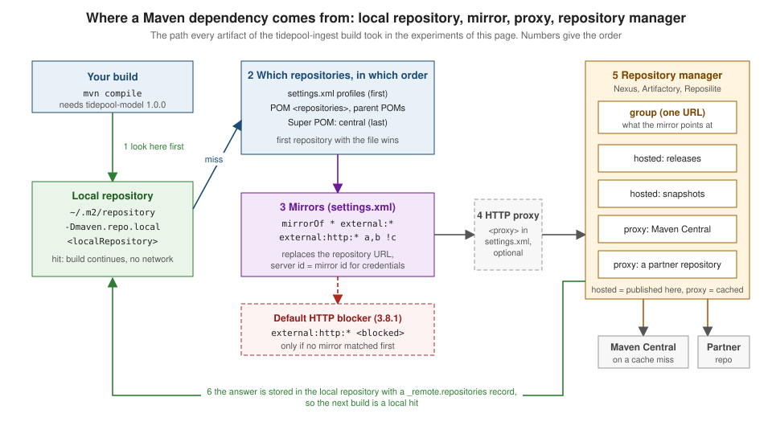

Repositories, Mirrors & Repository Managers
|
This content was generated with the assistance of AI and should be verified against the official documentation before being relied on in production. |
This page is written against Apache Maven 3.10.0 (Maven Resolver 2.0.24) on JDK 26. Every example was run on 2026-10-16. Maven 3.9.16
(Resolver 1.9.27) and Maven 4.0.0-rc-7 (a release candidate, Resolver 2.0.23) were run wherever the page says so. All runs used
MAVEN_ARGS="-B -ntp" (batch mode, no transfer progress), and from the console output the Scanning for projects line, the banner and
separator lines, blank [INFO] and [ERROR] lines, the Total time and Finished at lines, the Help 1 trailer of a failed build and
the Loaded N auto-discovered prefixes line of Maven 3.10 were left out. Paths in the output were shortened: the directory of the
experiment is shown as . or removed, and file:///lab/ stands for it in file: URLs.
No repository manager is installed on the machine that wrote this page. Nexus, Artifactory and Reposilite are described, and every command
that would need one is marked "not run here". What the experiments used instead is a small Python file server that plays the three roles a
repository manager plays, so the Maven side of every example is real; the table in the section "The lab" below shows what it does. Nothing was
published anywhere except to file: directories inside the scratch directory.
Maven finds, downloads and stores artifacts through repositories. Everything else on this page — mirrors, proxies, certificates, repository
managers — decides where that traffic goes and what it has to pass on the way. The coordinates and the repository layout are on
Philosophy, Coordinates & Directory Layout
and Repositories & Publishing Across Tools; the
elements of settings.xml, including password encryption, are on
settings.xml & Password Encryption; publishing is on
Install, Deploy & Distribution Management.

The lab
The scenario is the tidepool project of this section: io.tidepool:tidepool-ingest depends on io.tidepool:tidepool-model:1.0.0, a
library published only in the company’s internal repository, and on org.apache.commons:commons-lang3, which lives on Central. The
consumer declares the internal repository the way a real POM does, with a URL that this machine cannot reach:
<repositories>
<repository>
<id>tidepool-internal</id>
<url>https://repo.tidepool.example/releases</url>
</repository>
</repositories>What answers on localhost is groupserver.py, about 80 lines of Python. It is not a repository manager and has none of their features
(no security, no UI, no cleanup); it only imitates the three repository types the way Maven sees them:
| Role | What the stand-in does |
|---|---|
hosted repository |
A directory ( |
proxy repository |
On a miss it fetches the same path from |
group repository |
One URL, |
The mirror that sends the build there is the smallest useful settings.xml. Every experiment passes it with -s and uses a throw-away
local repository (-Dmaven.repo.local=m2/...), so nothing touched ~/.m2/repository and ~/.m2/settings.xml does not exist on this machine:
<settings xmlns="http://maven.apache.org/SETTINGS/1.2.0">
<mirrors>
<mirror>
<id>tidepool-group</id>
<name>Group repository on localhost</name>
<url>http://localhost:8081/maven-public/</url>
<mirrorOf>*</mirrorOf>
</mirror>
</mirrors>
</settings>The local repository
The local repository is a directory on the computer that runs Maven. It caches everything downloaded from remote repositories and holds
the artifacts you installed with mvn install. By default it is ~/.m2/repository:
$ mvn -q help:evaluate -Dexpression=settings.localRepository -DforceStdout
~/.m2/repositoryTwo things change it: the localRepository element of settings.xml (it accepts interpolation such as
${env.TIDEPOOL_LAB}), and the maven.repo.local user property, which wins over the file. A CI server usually sets the property so that
every job gets a clean repository, or a shared one on a fast disk:
<settings xmlns="http://maven.apache.org/SETTINGS/1.2.0">
<localRepository>${env.TIDEPOOL_LAB}/m2/from-settings</localRepository>
</settings>$ mvn -q -s settings/localrepo.xml help:evaluate -Dexpression=settings.localRepository -DforceStdout
m2/from-settings
$ mvn -q -s settings/localrepo.xml -Dmaven.repo.local=m2/from-cli help:evaluate -Dexpression=settings.localRepository -DforceStdout
m2/from-cliThe first build that needs an artifact downloads it into the local repository, and later builds find it there:
$ mvn -f consumer -s settings/mirror.xml -Dmaven.repo.local=m2/a compile
[INFO] --- resources:3.5.0:resources (default-resources) @ tidepool-ingest ---
[INFO] skip non existing resourceDirectory consumer/src/main/resources
[INFO] --- compiler:3.16.0:compile (default-compile) @ tidepool-ingest ---
[INFO] Recompiling the module because of changed dependency.
[INFO] Compiling 1 source file with javac [debug release 17] to target/classes
[INFO] BUILD SUCCESSm2/a/io/tidepool/tidepool-model/1.0.0/_remote.repositories
m2/a/io/tidepool/tidepool-model/1.0.0/tidepool-model-1.0.0.jar
m2/a/io/tidepool/tidepool-model/1.0.0/tidepool-model-1.0.0.jar.sha1
m2/a/io/tidepool/tidepool-model/1.0.0/tidepool-model-1.0.0.pom
m2/a/io/tidepool/tidepool-model/1.0.0/tidepool-model-1.0.0.pom.sha1(That is every file of io.tidepool in the local repository after the build, with the artifact of the mirror; the .sha1 files are the checksums that came with the download.)
The directory names are the coordinates; the layout is described on
Philosophy, Coordinates & Directory Layout. The one
file that is not part of the layout is _remote.repositories. Maven Resolver writes it to remember where each file came from:
$ cat m2/a/io/tidepool/tidepool-model/1.0.0/_remote.repositories
tidepool-model-1.0.0.jar>tidepool-group-1a968c7f478f62a6e7af9c6e8d15ca0dd2a49768=
tidepool-model-1.0.0.pom>tidepool-group-1a968c7f478f62a6e7af9c6e8d15ca0dd2a49768=It is an internal file (its first line says the format may change), but its effect is visible and it explains the most confusing local-repository behaviour. The "enhanced" local repository manager of Maven 3 only trusts a file when it was downloaded from a repository that is part of the current build. Delete the mirror from the command line and ask the same local repository for the same plugin, offline:
$ mvn -o -f consumer -Dmaven.repo.local=m2/a compile
[INFO] Artifact org.apache.maven.plugins:maven-resources-plugin:pom:3.5.0 is present in the local repository, but cached from a remote repository ID that is unavailable in current build context, verifying that is downloadable from [central (https://repo.maven.apache.org/maven2, default, releases)]
[INFO] Artifact org.apache.maven.plugins:maven-resources-plugin:jar:3.5.0 is present in the local repository, but cached from a remote repository ID that is unavailable in current build context, verifying that is downloadable from [central (https://repo.maven.apache.org/maven2, default, releases)]
[ERROR] BUILD FAILURE
[ERROR] Cannot access central (https://repo.maven.apache.org/maven2) in offline mode and the artifact org.apache.maven.plugins:maven-resources-plugin:jar:3.5.0 has not been downloaded from it before.The plugin JAR is physically there, but it was cached from tidepool-group, and this build has no repository of that id, so Maven wants to
verify it against central, which it cannot reach offline. This is why a local repository filled through a mirror cannot simply be copied to
a machine without that mirror ("works on my machine"), and why a build that suddenly switches from Central to a mirror downloads everything
again. Copy the settings.xml with the repository, or copy the repository with -Dmaven.repo.local.tail (below).
The identifier written after the > differs between releases. Maven 3.10.0 and 4.0.0-rc-7 (Resolver 2.0) append a hash that changes with the
repository URL, Maven 3.9.16 (Resolver 1.9) writes the plain id:
3.10.0 tidepool-model-1.0.0.jar>tidepool-group-1a968c7f478f62a6e7af9c6e8d15ca0dd2a49768=
3.9.16 tidepool-model-1.0.0.jar>tidepool-group=
4.0.0-rc-7 tidepool-model-1.0.0.jar>tidepool-group-1a968c7f478f62a6e7af9c6e8d15ca0dd2a49768=A read-only second repository: maven.repo.local.tail
Maven 3.9.0 added a chained local repository (its release notes list it next to the split local repository). The user property maven.repo.local.tail names one or more additional local repositories (separated with a comma) that Maven
reads from but never writes to; the property name is not described on the official pages, it is what Maven 3.9 and later read, and it was tested here. The normal local repository is the head and receives all new files. This is the way to give every CI job a
fresh head repository on top of a prepared, read-only repository of the common dependencies:
$ mvn -o -f consumer -s settings/mirror.xml -Dmaven.repo.local=m2/head -Dmaven.repo.local.tail=m2/a compile
[INFO] --- resources:3.5.0:resources (default-resources) @ tidepool-ingest ---
[INFO] skip non existing resourceDirectory consumer/src/main/resources
[INFO] --- compiler:3.16.0:compile (default-compile) @ tidepool-ingest ---
[INFO] Recompiling the module because of changed dependency.
[INFO] Compiling 1 source file with javac [debug release 17] to target/classes
[INFO] BUILD SUCCESS
$ ls m2/headThe build succeeded offline although the head repository (m2/head) is empty and stays empty: everything came from m2/a.
A local repository split by origin
Resolver can keep files you built yourself apart from the ones you downloaded, and the ones downloaded from different repositories apart from each other. The option is a resolver property (see the transport section below for how to set those); the two flags below are the ones of the Maven transport guide. The experiment installed a library and then built the consumer with the same repository:
$ ls m2/sp
cached
installed
$ ls m2/sp/installed
io
$ ls m2/sp/cached
tidepool-group-1a968c7f478f62a6e7af9c6e8d15ca0dd2a49768The tree is no longer one: installed/ holds what mvn install wrote (the first command, installing tidepool-model), and cached/ has one subdirectory per remote repository key. The
split layout makes it possible to share the cached part between builds without sharing locally installed snapshots.
Old options and old advice
-llr (--legacy-local-repository) selected the Maven 2 repository manager that did not record where files came from. Its help text on 3.10.0
says it all, and it is not worth trying:
$ mvn --help | grep -A1 llr
-llr,--legacy-local-repository UNSUPPORTED: Use of this option
will make Maven invocation fail.Advice from the Maven 2 era to point maven.repo.remote at a list of repositories (still in the official SSL guide) is Maven 1; in Maven 3 and
later remote repositories come from POMs and settings only. To empty a local repository use the dependency plugin’s purge-local-repository
goal (see Dependency Analysis & Convergence) rather than deleting directories by hand when only
some artifacts are damaged.
Remote repositories and Central
A remote repository is any repository that is not the local one: a public service such as Central, a directory reachable with file:, an HTTP
server inside the company, a repository manager. A repository has an id, a url, a layout (default, the Maven 2 layout that every repository on this page uses) and separate policies for releases and snapshots:
<repositories>
<repository>
<id>tidepool-internal</id>
<url>https://repo.tidepool.example/releases</url>
<releases>
<enabled>true</enabled>
<updatePolicy>never</updatePolicy>
<checksumPolicy>fail</checksumPolicy>
</releases>
<snapshots>
<enabled>false</enabled>
</snapshots>
</repository>
</repositories>| Element | Meaning |
|---|---|
|
The identity of the repository. It must be unique, is what |
|
Where the repository lives. |
|
|
|
|
Central is the default. It is declared in the Super POM, which every POM inherits, and is why a project with no repositories can still build.
The effective POM of the tidepool consumer shows it, last, after the project’s own repository:
$ mvn -f consumer help:effective-pom -Doutput=effective-pom.xml
(the <repositories> and <pluginRepositories> elements of effective-pom.xml)
<repositories>
<repository>
<id>tidepool-internal</id>
<url>https://repo.tidepool.example/releases</url>
</repository>
<repository>
<snapshots>
<enabled>false</enabled>
</snapshots>
<id>central</id>
<name>Central Repository</name>
<url>https://repo.maven.apache.org/maven2</url>
</repository>
</repositories>
<pluginRepositories>
<pluginRepository>
<snapshots>
<enabled>false</enabled>
</snapshots>
<id>central</id>
<name>Central Repository</name>
<url>https://repo.maven.apache.org/maven2</url>
</pluginRepository>
</pluginRepositories>Two details of that listing matter every day. Central has snapshots switched off, so no SNAPSHOT is ever fetched from it. And pluginRepositories is a
separate list from repositories: the repositories a project uses to download its dependencies are not used to download the plugins that build it, and the
other way round. A repository that hosts both a library and your build plugin must be declared in both elements (a mirror, below, covers both at once).
An id may be used only once. A POM that declares it twice is rejected before any network access:
$ mvn -o -f dupid -s settings/mirror-except-ab.xml -Dmaven.repo.local=m2/o1 validate
[ERROR] [ERROR] Some problems were encountered while processing the POMs:
[ERROR] 'repositories.repository.id' must be unique: repo-a -> file://${project.basedir}/../../repo-a vs file://${project.basedir}/../../repo-b @ line 20, column 11
@
[ERROR] The build could not read 1 project -> [Help 1]
[ERROR] The project io.tidepool:tidepool-order:1.0.0 (dupid/pom.xml) has 1 error
[ERROR] 'repositories.repository.id' must be unique: repo-a -> file://${project.basedir}/../../repo-a vs file://${project.basedir}/../../repo-b @ line 20, column 11Repository order
When several repositories could answer, the order decides. The Maven guide lists it, and -X prints the list Maven actually uses.
Two repositories, repo-a and repo-b, both hold io.tidepool:gauge-data:1.0, with different content (the JAR of each repository contains a file
SOURCE.txt that names the repository). The POM declares repo-a first; because the experiment must reach the file repositories, the mirror
excludes them with *,!repo-a,!repo-b (the mirror patterns are explained below):
$ mvn -X -o -f order/pom-first -s settings/mirror-except-ab.xml -Dmaven.repo.local=m2/o1 dependency:resolve
Repositories (dependencies): [repo-a (file:///lab/order/pom-first/../../repo-a, default, releases+snapshots), repo-b (file:///lab/order/pom-first/../../repo-b, default, releases+snapshots), tidepool-group (http://localhost:8081/maven-public/, default, releases)]
$ unzip -p m2/o1/io/tidepool/gauge-data/1.0/gauge-data-1.0.jar SOURCE.txt
gauge-data 1.0 served by repo-a
$ cat m2/o1/io/tidepool/gauge-data/1.0/_remote.repositories
gauge-data-1.0.jar>repo-a-76e3decd6b9006c7012867484833605ab2081cb2=
gauge-data-1.0.pom>repo-a-76e3decd6b9006c7012867484833605ab2081cb2=Declaring repo-b first reverses the winner, with nothing else changed:
$ mvn -X -o -f order/b-first -s settings/mirror-except-ab.xml -Dmaven.repo.local=m2/o2 dependency:resolve
Repositories (dependencies): [repo-b (file:///lab/order/b-first/../../repo-b, default, releases+snapshots), repo-a (file:///lab/order/b-first/../../repo-a, default, releases+snapshots), tidepool-group (http://localhost:8081/maven-public/, default, releases)]
$ unzip -p m2/o2/io/tidepool/gauge-data/1.0/gauge-data-1.0.jar SOURCE.txt
gauge-data 1.0 served by repo-bAnd a repository with the same id defined in a settings.xml profile is searched before the POM’s repositories (and replaces the POM repository of
that id, see below):
<settings xmlns="http://maven.apache.org/SETTINGS/1.2.0">
<profiles>
<profile>
<id>team-repo</id>
<repositories>
<repository>
<id>repo-b</id>
<url>file://${env.TIDEPOOL_LAB}/repo-b</url>
</repository>
</repositories>
</profile>
</profiles>
<activeProfiles>
<activeProfile>team-repo</activeProfile>
</activeProfiles>
</settings>$ mvn -X -o -f order/pom-first -s settings/profile-b.xml -gs settings/mirror-except-ab.xml -Dmaven.repo.local=m2/o3 dependency:resolve
Repositories (dependencies): [repo-b (file:///lab/repo-b, default, releases+snapshots), repo-a (file:///lab/order/pom-first/../../repo-a, default, releases+snapshots), tidepool-group (http://localhost:8081/maven-public/, default, releases)]
$ unzip -p m2/o3/io/tidepool/gauge-data/1.0/gauge-data-1.0.jar SOURCE.txt
gauge-data 1.0 served by repo-bSo the order is: repositories of the effective settings (profiles of the global then the user settings.xml), the project’s repositories in declaration
order, the repositories inherited from parent POMs, and finally those of the Super POM, that is Central. Within each of these locations, repositories of
active profiles come first. A third group, which the 3.8.1 release notes explain as the context of an artifact, are the repositories of the effective POMs along the dependency path: they are used only for the
artifacts that dependency brings in, so a library’s POM cannot redirect where your other dependencies come from. Two practical consequences follow:
-
If the same coordinates exist in two repositories with different content, the first repository wins and nothing warns you. Never publish a different file under existing coordinates, and keep private groupIds out of public repositories.
-
The repository you list first is asked first for every artifact of the build. A slow or unreliable repository at the head of the list slows every download that has to travel further down; a repository manager avoids this by answering for all of them with one URL.
The dependency:list-repositories goal prints the repositories of the project and shows the mirror that replaces each of them. Do not rely on the order
it prints: it is not guaranteed to be the resolution order (in an earlier run of this same experiment the goal printed repo-b before repo-a, although Maven asks repo-a first). -X is the authoritative source.
$ mvn -o -f order/pom-first -s settings/mirror-except-ab.xml -Dmaven.repo.local=m2/o1 dependency:list-repositories
[INFO] --- dependency:3.11.0:list-repositories (default-cli) @ tidepool-order ---
[INFO] Project remote repositories used by this build:
* repo-a (file:///lab/order/pom-first/../../repo-a, default, releases+snapshots)
* repo-b (file:///lab/order/pom-first/../../repo-b, default, releases+snapshots)
* central (https://repo.maven.apache.org/maven2, default, releases) mirrored by tidepool-group (http://localhost:8081/maven-public/, default, releases)
[INFO] BUILD SUCCESSOffline builds and cached failures
mvn -o (--offline, or <offline>true</offline> in settings.xml) tells Maven never to use the network. Whatever it needs must already be
in the local repository and be trusted in the current context (above):
$ mvn -o -f consumer -s settings/mirror.xml -Dmaven.repo.local=m2/off compile
[WARNING] The POM for org.apache.maven.plugins:maven-resources-plugin:jar:3.5.0 is missing, no dependency information available
[ERROR] BUILD FAILURE
[ERROR] Plugin org.apache.maven.plugins:maven-resources-plugin:3.5.0 or one of its dependencies could not be resolved:
[ERROR] Cannot access tidepool-group (http://localhost:8081/maven-public/) in offline mode and the artifact org.apache.maven.plugins:maven-resources-plugin:jar:3.5.0 has not been downloaded from it before.
[ERROR] -> [Help 1]With a complete local repository the same switch works, and so does the settings.xml element:
<settings xmlns="http://maven.apache.org/SETTINGS/1.2.0">
<offline>true</offline>
<mirrors>
<mirror>
<id>tidepool-group</id>
<url>http://localhost:8081/maven-public/</url>
<mirrorOf>*</mirrorOf>
</mirror>
</mirrors>
</settings>$ mvn -f consumer-110 -s settings/mirror-offline.xml -Dmaven.repo.local=m2/g2 compile
[INFO] BUILD SUCCESSdependency:go-offline fills a local repository with everything a project needs, and the Maven guide notes that many plugins also honour the offline
setting (they skip links to the Internet). Plugins that insist on the network fail, which is a plugin bug.
The other classic is the cached failure. When a repository answers 404 Maven stores a marker in the local repository and does not ask again until the
update interval has passed, even after you have fixed the cause. The experiment: a second group repository (localhost:8082) that does not hold
tidepool-model yet.
$ mvn -f consumer -s settings/mirror-8082.xml -Dmaven.repo.local=m2/cache compile
[WARNING] The POM for io.tidepool:tidepool-model:jar:1.0.0 is missing, no dependency information available
[ERROR] BUILD FAILURE
[ERROR] Failed to execute goal on project tidepool-ingest: Could not resolve dependencies for project io.tidepool:tidepool-ingest:jar:1.0.0
[ERROR] dependency: io.tidepool:tidepool-model:jar:1.0.0 (compile)
[ERROR] Could not find artifact io.tidepool:tidepool-model:jar:1.0.0 in tidepool-group (http://localhost:8082/maven-public/)
[ERROR] -> [Help 1]The artifact is then published to that repository (the directory is copied). The build is repeated:
$ mvn -f consumer -s settings/mirror-8082.xml -Dmaven.repo.local=m2/cache compile
[WARNING] The POM for io.tidepool:tidepool-model:jar:1.0.0 is missing, no dependency information available
[ERROR] BUILD FAILURE
[ERROR] Failed to execute goal on project tidepool-ingest: Could not resolve dependencies for project io.tidepool:tidepool-ingest:jar:1.0.0
[ERROR] dependency: io.tidepool:tidepool-model:jar:1.0.0 (compile)
[ERROR] io.tidepool:tidepool-model:jar:1.0.0 was not found in http://localhost:8082/maven-public/ during a previous attempt. This failure was cached in the local repository and resolution is not reattempted until the update interval of tidepool-group has elapsed or updates are forced
[ERROR] -> [Help 1]The markers are small property files next to where the artifact will be:
$ ls m2/cache/io/tidepool/tidepool-model/1.0.0/
tidepool-model-1.0.0.jar.lastUpdated
tidepool-model-1.0.0.pom.lastUpdated
$ cat m2/cache/io/tidepool/tidepool-model/1.0.0/tidepool-model-1.0.0.pom.lastUpdated
#NOTE: This is a Maven Resolver internal implementation file, its format can be changed without prior notice.
#<date>
http\://localhost\:8082/maven-public/.error=
http\://localhost\:8082/maven-public/.lastUpdated=1792158268616(The date comment line of the file was replaced by #<date>; the number is the time in milliseconds of the failed attempt.)
-U (--update-snapshots) forces the check; on Maven 3.10 it also retries cached failures of releases:
$ mvn -U -f consumer -s settings/mirror-8082.xml -Dmaven.repo.local=m2/cache compile
[INFO] --- resources:3.5.0:resources (default-resources) @ tidepool-ingest ---
[INFO] skip non existing resourceDirectory consumer/src/main/resources
[INFO] --- compiler:3.16.0:compile (default-compile) @ tidepool-ingest ---
[INFO] Recompiling the module because of changed dependency.
[INFO] Compiling 1 source file with javac [debug release 17] to target/classes
[INFO] BUILD SUCCESSMaven 3.10 added finer switches. They appear in its --help, together with the options used on this page:
$ mvn --help (the options this page uses, Maven 3.10.0)
-C,--strict-checksums Fail the build if checksums don't
match
-c,--lax-checksums Warn if checksums don't match
-gs,--global-settings <arg> Alternate path for the global
settings file
-llr,--legacy-local-repository UNSUPPORTED: Use of this option
will make Maven invocation fail.
--metadata-update-policy <arg> The update policy to apply onto
metadata ('always', 'daily',
'never'); The -UM option
overrides this option with
'always'
-o,--offline Work offline
-s,--settings <arg> Alternate path for the user
settings file
-U,--update-snapshots Forces a check for missing
releases and updated snapshots on
remote repositories
-UA,--update-artifacts Forces checks for missing
artifacts (retries cached
retrieval errors)
-UM,--update-metadata Forces updates of remote
repository metadata (updates
plugin prefixes, version ranges
and snapshots)-UA retries cached retrieval errors only, -UM refreshes repository metadata (plugin prefixes, version ranges, snapshots), and -U forces the check for missing releases and updated snapshots. A connection that is refused (a server that is down) is retried by the next build; only an answer from the server (here 404) stops later attempts.
Checksums
Every file in a Maven repository has checksum files next to it (.sha1, and .md5 in older repositories). Maven compares what it downloads with them. The
default policy is warn: a mismatch is logged and the build continues. With the repository’s checksumPolicy (warn, fail, ignore) or the command line
(-C fails, -c warns) you decide. The hosted repository of this experiment holds gauge-data-1.0.jar with a .sha1 that was replaced by hand:
$ cat hosted-bad/io/tidepool/gauge-data/1.0/gauge-data-1.0.jar.sha1 (replaced by hand)
0000000000000000000000000000000000000000
$ mvn -f consumer-bad -s settings/mirror-8086.xml -Dmaven.repo.local=m2/cs1 compile
[WARNING] Could not validate integrity of download from http://localhost:8086/maven-public/io/tidepool/gauge-data/1.0/gauge-data-1.0.jar
org.eclipse.aether.transfer.ChecksumFailureException: Checksum validation failed, expected '0000000000000000000000000000000000000000' (REMOTE_EXTERNAL) but is actually '6a09410b306c5b5351fd3fb6103a74da01ae8f40'
[INFO] BUILD SUCCESS
$ mvn -C -f consumer-bad -s settings/mirror-8086.xml -Dmaven.repo.local=m2/cs2 compile
[ERROR] BUILD FAILURE
[ERROR] Could not transfer artifact io.tidepool:gauge-data:jar:1.0 from/to tidepool-group (http://localhost:8086/maven-public/): Checksum validation failed, expected '0000000000000000000000000000000000000000' (REMOTE_EXTERNAL) but is actually '6a09410b306c5b5351fd3fb6103a74da01ae8f40'Note that the strict run stops at the first mismatch, and that the default let a download whose checksum did not match into the local repository. Use
<checksumPolicy>fail</checksumPolicy> on repositories you control and -C in CI. Resolver also prefers a checksum that the server includes in the response headers to a second request for the .sha1 file (aether.connector.basic.includedChecksums, on by default, HTTP only); Maven 3.9.0 added
"trusted checksum sources" that provide checksums ahead of time (see the Maven 3.9.0 release notes and the resolver configuration page).
Mirrors
A mirror is a settings.xml entry that says: whenever Maven would use repository X, use this URL instead. The reasons are the ones the Maven guide
gives: a faster copy, an internal repository you control, or a repository manager that caches Central. It is set in settings.xml and never in the POM,
because a mirror is a property of the machine and the network, not of the project.
<mirror>
<id>tidepool-group</id>
<name>Group repository</name>
<url>https://repo.tidepool.example/maven-public/</url>
<mirrorOf>*</mirrorOf>
<blocked>false</blocked>
</mirror>id must be unique across the mirrors. mirrorOf selects the repositories. blocked (Maven 3.8.1) turns the mirror into a stop sign (see below). The
mirror replaces both the repositories and the pluginRepositories entries it matches, and it also replaces repositories that arrive through the POMs of
dependencies. Two rules from the guide are easy to miss:
-
A repository has at most one mirror. Maven does not aggregate several mirrors of the same repository, it takes the first match. If you want a combined view, use a repository manager with a group repository.
-
If a mirror’s
mirrorOfis exactly a repository id, it is chosen before any pattern, wherever it stands in the file. Otherwise the first declared mirror that matches wins.
mirrorOf patterns
| Value | Selects |
|---|---|
|
Every repository. |
|
Every repository except those that are on |
|
Every repository that uses |
|
The listed ids. |
|
Never |
To see the effect without a network, a POM with four repositories (alpha over plain HTTP on a foreign host, beta over HTTPS, lab over HTTP on localhost,
files with a file: URL) plus Central was resolved with a different mirrorOf each time. mvn -X validate prints the repository list Maven
will use, after mirrors and the HTTP blocker; line breaks were added after each repository:
<?xml version="1.0" encoding="UTF-8"?>
<project xmlns="http://maven.apache.org/POM/4.0.0" xmlns:xsi="http://www.w3.org/2001/XMLSchema-instance" xsi:schemaLocation="http://maven.apache.org/POM/4.0.0 https://maven.apache.org/xsd/maven-4.0.0.xsd">
<modelVersion>4.0.0</modelVersion>
<groupId>io.tidepool</groupId>
<artifactId>tidepool-patterns</artifactId>
<version>1.0.0</version>
<packaging>pom</packaging>
<repositories>
<repository>
<id>alpha</id>
<url>http://alpha.tidepool.example/maven</url>
</repository>
<repository>
<id>beta</id>
<url>https://beta.tidepool.example/maven</url>
</repository>
<repository>
<id>lab</id>
<url>http://localhost:9099/maven</url>
</repository>
<repository>
<id>files</id>
<url>file:///tmp/tidepool-files</url>
</repository>
</repositories>
</project>This POM is this page’s own lab setup, not an example from the Maven documentation.
The baseline, with no mirror of our own. The default blocker already replaced alpha:
<no mirror configured>
maven-default-http-blocker (http://0.0.0.0/, default, releases+snapshots, blocked),
beta (https://beta.tidepool.example/maven, default, releases+snapshots),
lab (http://localhost:9099/maven, default, releases+snapshots),
files (file:///tmp/tidepool-files, default, releases+snapshots),
central (https://repo.maven.apache.org/maven2, default, releases)* and external:*:
<mirrorOf>*</mirrorOf>
m (https://mirror.tidepool.example/maven-public/, default, releases+snapshots)
<mirrorOf>external:*</mirrorOf>
m (https://mirror.tidepool.example/maven-public/, default, releases+snapshots),
lab (http://localhost:9099/maven, default, releases+snapshots),
files (file:///tmp/tidepool-files, default, releases+snapshots)external:http:* takes only alpha, the one external HTTP repository. *,!lab takes everything but lab:
<mirrorOf>external:http:*</mirrorOf>
m (https://mirror.tidepool.example/maven-public/, default, releases+snapshots),
beta (https://beta.tidepool.example/maven, default, releases+snapshots),
lab (http://localhost:9099/maven, default, releases+snapshots),
files (file:///tmp/tidepool-files, default, releases+snapshots),
central (https://repo.maven.apache.org/maven2, default, releases)
<mirrorOf>*,!lab</mirrorOf>
m (https://mirror.tidepool.example/maven-public/, default, releases+snapshots),
lab (http://localhost:9099/maven, default, releases+snapshots)A list takes the ids named. A mirror of central only takes Central, and alpha falls through to the blocker:
<mirrorOf>alpha,beta</mirrorOf>
m (https://mirror.tidepool.example/maven-public/, default, releases+snapshots),
lab (http://localhost:9099/maven, default, releases+snapshots),
files (file:///tmp/tidepool-files, default, releases+snapshots),
central (https://repo.maven.apache.org/maven2, default, releases)
<mirrorOf>central</mirrorOf>
maven-default-http-blocker (http://0.0.0.0/, default, releases+snapshots, blocked),
beta (https://beta.tidepool.example/maven, default, releases+snapshots),
lab (http://localhost:9099/maven, default, releases+snapshots),
files (file:///tmp/tidepool-files, default, releases+snapshots),
m (https://mirror.tidepool.example/maven-public/, default, releases)Whitespace matters. The same exclusion written with a space after the comma silently turns the mirror off, and the blocker applies again, while the spelling without the space works:
<mirrorOf>!alpha, *</mirrorOf>
maven-default-http-blocker (http://0.0.0.0/, default, releases+snapshots, blocked),
beta (https://beta.tidepool.example/maven, default, releases+snapshots),
lab (http://localhost:9099/maven, default, releases+snapshots),
files (file:///tmp/tidepool-files, default, releases+snapshots),
central (https://repo.maven.apache.org/maven2, default, releases)
<mirrorOf>!alpha,*</mirrorOf>
maven-default-http-blocker (http://0.0.0.0/, default, releases+snapshots, blocked),
m (https://mirror.tidepool.example/maven-public/, default, releases+snapshots)When several mirrors are declared, an exact id beats a pattern even if the pattern is listed first:
<settings xmlns="http://maven.apache.org/SETTINGS/1.2.0">
<mirrors>
<mirror>
<id>m1</id>
<url>https://mirror1.tidepool.example/maven-public/</url>
<mirrorOf>*</mirrorOf>
</mirror>
<mirror>
<id>m2</id>
<url>https://mirror2.tidepool.example/maven-public/</url>
<mirrorOf>beta</mirrorOf>
</mirror>
</mirrors>
</settings>settings/two-mirrors.xml
m1 (https://mirror1.tidepool.example/maven-public/, default, releases+snapshots),
m2 (https://mirror2.tidepool.example/maven-public/, default, releases+snapshots)Here beta goes to m2 and everything else to m1. The same selections were repeated on Maven 3.9.16 and 4.0.0-rc-7 and compared with the 3.10.0 result:
star 3.9.16 same as 3.10.0
star 4.0.0-rc-7 same as 3.10.0
external 3.9.16 same as 3.10.0
external 4.0.0-rc-7 same as 3.10.0
externalhttp 3.9.16 same as 3.10.0
externalhttp 4.0.0-rc-7 same as 3.10.0
star-not-lab 3.9.16 same as 3.10.0
star-not-lab 4.0.0-rc-7 same as 3.10.0
list 3.9.16 same as 3.10.0
list 4.0.0-rc-7 same as 3.10.0
central 3.9.16 same as 3.10.0
central 4.0.0-rc-7 same as 3.10.0
nospace 3.9.16 same as 3.10.0
nospace 4.0.0-rc-7 same as 3.10.0The mirror selection is the same in all three, so you can share one settings.xml between them.
A mirror also carries credentials by its id, not by the id of the repository it replaces: put the server entry for tidepool-group, not for tidepool-internal.
That rule, and a mistake that produces HTTP Status: 401, are in the section on credentials below.
The default HTTP blocker
Until 2021 Maven downloaded from any repository a POM declared, and Central contains thousands of old POMs that declare plain http:// repositories. An attacker on the
network path could answer instead of the real server and have the build run his JAR. Maven 3.8.1 (CVE-2021-26291) therefore ships with a mirror in its global
conf/settings.xml that blocks every external plain-HTTP repository:
$ sed -n "/<mirrors>/,/<\/mirrors>/p" conf/settings.xml (comments removed)
<mirrors>
<mirror>
<id>maven-default-http-blocker</id>
<mirrorOf>external:http:*</mirrorOf>
<name>Pseudo repository to mirror external repositories initially using HTTP.</name>
<url>http://0.0.0.0/</url>
<blocked>true</blocked>
</mirror>
</mirrors>The URL http://0.0.0.0/ is a placeholder that is never contacted. A project that declares an http repository, or whose dependency’s POM does, now fails with a message that
names the culprit. Here the repository tidepool-http was declared with an http URL; the run is Maven 3.10.0:
$ mvn -f blocked -Dmaven.repo.local=m2/blk dependency:resolve
[ERROR] BUILD FAILURE
[ERROR] Failed to execute goal on project tidepool-blocked: Could not collect dependencies for project io.tidepool:tidepool-blocked:jar:1.0.0
[ERROR] Failed to read artifact descriptor for io.tidepool:tidepool-model:jar:1.0.0
[ERROR] Caused by: The following artifacts could not be resolved: io.tidepool:tidepool-model:pom:1.0.0 (absent): Could not transfer artifact io.tidepool:tidepool-model:pom:1.0.0 from/to maven-default-http-blocker (http://0.0.0.0/): Blocked mirror for repositories: [tidepool-http (http://repo.tidepool.example/releases, default, releases+snapshots)]
[ERROR] -> [Help 1]The same message appears on Maven 3.9.16 and 4.0.0-rc-7 (the command label shows the release), and the <mirror> block of the global settings.xml is identical in 3.10.0 and 4.0.0-rc-7:
$ mvn-3.9.16 -f blocked -Dmaven.repo.local=m2/blk39 dependency:resolve
[ERROR] Caused by: The following artifacts could not be resolved: io.tidepool:tidepool-model:pom:1.0.0 (absent): Could not transfer artifact io.tidepool:tidepool-model:pom:1.0.0 from/to maven-default-http-blocker (http://0.0.0.0/): Blocked mirror for repositories: [tidepool-http (http://repo.tidepool.example/releases, default, releases+snapshots)]
$ mvn-4.0.0-rc-7 -f blocked -Dmaven.repo.local=m2/blk4 dependency:resolve
[ERROR] Caused by: The following artifacts could not be resolved: io.tidepool:tidepool-model:pom:1.0.0 (absent): Could not transfer artifact io.tidepool:tidepool-model:pom:1.0.0 from/to maven-default-http-blocker (http://0.0.0.0/): Blocked mirror for repositories: [tidepool-http (http://repo.tidepool.example/releases, default, releases+snapshots)]: Failed to collect dependencies at io.tidepool:tidepool-model:jar:1.0.0
$ diff 3.10.0 and 4.0.0-rc-7: <mirror> block of conf/settings.xml
(identical)There are three ways to deal with it, in this order of preference:
-
Fix the source. If the repository is in your own POM, change the URL to
https. If it comes from a dependency’s POM, upgrade to a version that useshttps. -
Mirror it deliberately. A mirror whose
mirrorOfis exactly that repository id, pointing at a trustworthy URL (your repository manager, or the same URL if you have made sure the network is safe), takes the repository out of the blocker’s reach. Run with that settings file; the repository resolves through the stand-in onlocalhost, which the blocker never treats as external:settings/fix-mirror.xml<settings xmlns="http://maven.apache.org/SETTINGS/1.2.0"> <mirrors> <mirror> <id>tidepool-group</id> <url>http://localhost:8081/maven-public/</url> <mirrorOf>tidepool-http</mirrorOf> </mirror> </mirrors> </settings>$ mvn -f blocked -s settings/fix-mirror.xml -Dmaven.repo.local=m2/blk dependency:resolve [INFO] --- dependency:3.11.0:resolve (default-cli) @ tidepool-blocked --- [INFO] The following files have been resolved: [INFO] io.tidepool:tidepool-model:jar:1.0.0:compile -- module tidepool.model (auto) [INFO] org.apache.commons:commons-lang3:jar:3.20.0:compile -- module org.apache.commons.lang3 [INFO] BUILD SUCCESS -
Allow one repository over HTTP. A mirror with the same URL as the repository, selected by id, shows what you are trusting:
settings/allow-alpha.xml<settings xmlns="http://maven.apache.org/SETTINGS/1.2.0"> <mirrors> <mirror> <id>alpha-allowed</id> <url>http://alpha.tidepool.example/maven</url> <mirrorOf>alpha</mirrorOf> </mirror> </mirrors> </settings>settings/allow-alpha.xml alpha-allowed (http://alpha.tidepool.example/maven, default, releases+snapshots), beta (https://beta.tidepool.example/maven, default, releases+snapshots), lab (http://localhost:9099/maven, default, releases+snapshots), files (file:///tmp/tidepool-files, default, releases+snapshots), central (https://repo.maven.apache.org/maven2, default, releases)
Never switch the blocker off by redefining the maven-default-http-blocker mirror with <blocked>false</blocked>: the mirror stays, only the block goes, and every external HTTP repository
is redirected to http://0.0.0.0/ (the first line of the listing). Removing the protection this way also opens every build to the attack the blocker prevents.
<settings xmlns="http://maven.apache.org/SETTINGS/1.2.0">
<mirrors>
<mirror>
<id>maven-default-http-blocker</id>
<mirrorOf>external:http:*</mirrorOf>
<url>http://0.0.0.0/</url>
<blocked>false</blocked>
</mirror>
</mirrors>
</settings>settings/unblock-all.xml
maven-default-http-blocker (http://0.0.0.0/, default, releases+snapshots),
beta (https://beta.tidepool.example/maven, default, releases+snapshots),
lab (http://localhost:9099/maven, default, releases+snapshots),
files (file:///tmp/tidepool-files, default, releases+snapshots),
central (https://repo.maven.apache.org/maven2, default, releases)You can create your own blocks too. A mirror with <blocked>true</blocked> and a mirrorOf of your choosing forbids those repositories (for example, one that
must never be used from a CI server):
<settings xmlns="http://maven.apache.org/SETTINGS/1.2.0">
<mirrors>
<mirror>
<id>no-lab</id>
<url>http://0.0.0.0/</url>
<mirrorOf>lab</mirrorOf>
<blocked>true</blocked>
</mirror>
</mirrors>
</settings>settings/block-lab.xml
maven-default-http-blocker (http://0.0.0.0/, default, releases+snapshots, blocked),
beta (https://beta.tidepool.example/maven, default, releases+snapshots),
no-lab (http://0.0.0.0/, default, releases+snapshots, blocked),
files (file:///tmp/tidepool-files, default, releases+snapshots),
central (https://repo.maven.apache.org/maven2, default, releases)Credentials for mirrors and repositories
Maven looks up credentials by repository id after mirroring: the server entry must carry the id of the mirror that serves the request (or of the repository, if
there is no mirror). The stand-in can require HTTP Basic authentication (--basic build-bot:...). The password is read from the environment
with ${env.TIDEPOOL_REPO_PASSWORD}; settings files can be committed or distributed without secrets this way (more, and encryption, on
settings.xml & Password Encryption). The values here are throwaway
placeholders of the experiment.
<settings xmlns="http://maven.apache.org/SETTINGS/1.2.0">
<mirrors>
<mirror>
<id>tidepool-group</id>
<name>Group repository on localhost</name>
<url>http://localhost:8085/maven-public/</url>
<mirrorOf>*</mirrorOf>
</mirror>
</mirrors>
<servers>
<server>
<id>tidepool-group</id>
<username>build-bot</username>
<password>${env.TIDEPOOL_REPO_PASSWORD}</password>
</server>
</servers>
</settings>With the server entry under the wrong id (central, the repository id instead of the mirror id) Maven sends no credentials and the server answers 401:
$ mvn -f consumer -s settings/auth-wrong-id.xml -Dmaven.repo.local=m2/au compile
[ERROR] BUILD FAILURE
[ERROR] The following artifacts could not be resolved: org.apache.maven.plugins:maven-resources-plugin:pom:3.5.0 (absent): Could not transfer artifact org.apache.maven.plugins:maven-resources-plugin:pom:3.5.0 from/to tidepool-group (http://localhost:8085/maven-public/): HTTP Status: 401By default Maven sends credentials only after the server has asked for them (answering 401). Preemptive authentication sends them with the first request, which saves
round trips and is needed by servers that answer 404 instead of 401 to anonymous requests. The key that switches it on changed with the resolver
generation: aether.connector.http.preemptiveAuth on Maven 3.9 (Resolver 1.9), aether.transport.http.preemptiveAuth on Maven 3.10 and 4.0.0-rc-7 (Resolver 2).
The table counts the 401 answers the server logged for one build:
Maven option 401 answers artifacts served
3.10.0 (no option) 3 178
3.10.0 -Daether.transport.http.preemptiveAuth=true 0 178
3.10.0 -Daether.connector.http.preemptiveAuth=true 3 178
3.9.16 (no option) 2 170
3.9.16 -Daether.transport.http.preemptiveAuth=true 2 170
3.9.16 -Daether.connector.http.preemptiveAuth=true 0 170
4.0.0-rc-7 (no option) 3 178
4.0.0-rc-7 -Daether.transport.http.preemptiveAuth=true 0 178
4.0.0-rc-7 -Daether.connector.http.preemptiveAuth=true 3 178An option with the wrong generation’s name is silently ignored: look at the unchanged 401 counts in the rows of the table. Maven 3.10.0 also scopes credentials to the
repository origin (scheme, host and port), so a password configured for one host is not offered to another; details are on the settings page.
Proxies
A proxy here is an HTTP proxy in front of the network, not a proxy repository. Behind a corporate firewall every request has to go through it. settings.xml has a
proxies element:
<settings xmlns="http://maven.apache.org/SETTINGS/1.2.0">
<mirrors>
<mirror>
<id>tidepool-group</id>
<url>http://repo.tidepool.test:8081/maven-public/</url>
<mirrorOf>*</mirrorOf>
</mirror>
</mirrors>
<proxies>
<proxy>
<id>corporate-proxy</id>
<active>true</active>
<protocol>http</protocol>
<host>localhost</host>
<port>8888</port>
</proxy>
</proxies>
</settings>The mirror URL uses a host name that exists only for the proxy, repo.tidepool.test; a small Python forward proxy (proxy.py, which resolves that name to the stand-in) logs
what goes through it. The build, and the first lines the proxy saw:
$ mvn -f consumer -s settings/proxy/mirror-via-name.xml -Dmaven.repo.local=m2/px1 compile
[INFO] --- resources:3.5.0:resources (default-resources) @ tidepool-ingest ---
[INFO] skip non existing resourceDirectory consumer/src/main/resources
[INFO] --- compiler:3.16.0:compile (default-compile) @ tidepool-ingest ---
[INFO] Recompiling the module because of changed dependency.
[INFO] Compiling 1 source file with javac [debug release 17] to target/classes
[INFO] BUILD SUCCESS
$ head -4 proxy.log
PROXY GET http://repo.tidepool.test:8081/maven-public/org/apache/maven/plugins/maven-resources-plugin/3.5.0/maven-resources-plugin-3.5.0.pom
PROXY GET http://repo.tidepool.test:8081/maven-public/org/apache/maven/plugins/maven-resources-plugin/3.5.0/maven-resources-plugin-3.5.0.pom.sha1
PROXY GET http://repo.tidepool.test:8081/maven-public/org/apache/maven/plugins/maven-plugins/47/maven-plugins-47.pom
PROXY GET http://repo.tidepool.test:8081/maven-public/org/apache/maven/plugins/maven-plugins/47/maven-plugins-47.pom.sha1
...
$ grep -c "^PROXY" proxy.log
178nonProxyHosts lists the hosts that must not be proxied, separated with |, with * as wildcard (the guide says it matches the JDK property). With the host in
the list the proxy is bypassed, so Maven tries to resolve the made-up name itself and fails; the proxy log stays empty:
$ mvn -f consumer -s settings/proxy/nonproxy.xml -Dmaven.repo.local=m2/px2 compile
[ERROR] BUILD FAILURE
[ERROR] Plugin org.apache.maven.plugins:maven-resources-plugin:3.5.0 or one of its dependencies could not be resolved:
[ERROR] The following artifacts could not be resolved: org.apache.maven.plugins:maven-resources-plugin:pom:3.5.0 (absent): Could not transfer artifact org.apache.maven.plugins:maven-resources-plugin:pom:3.5.0 from/to tidepool-group (http://repo.tidepool.test:8081/maven-public/): repo.tidepool.test: nodename nor servname provided, or not known
[ERROR] -> [Help 1]
$ wc -l < proxy.log
0A proxy that needs authentication takes username and password. Maven answers the 407 challenge; the proxy of the experiment (the password is a placeholder) logged the
rejected first request and then the authenticated ones:
$ head -3 proxy-auth.log
PROXY GET http://repo.tidepool.test:8081/maven-public/org/apache/maven/plugins/maven-resources-plugin/3.5.0/maven-resources-plugin-3.5.0.pom 407
PROXY GET http://repo.tidepool.test:8081/maven-public/org/apache/maven/plugins/maven-resources-plugin/3.5.0/maven-resources-plugin-3.5.0.pom proxy-user=build-bot
PROXY GET http://repo.tidepool.test:8081/maven-public/org/apache/maven/plugins/maven-resources-plugin/3.5.0/maven-resources-plugin-3.5.0.pom.sha1 proxy-user=build-botThe elements are id, active (set false to keep an entry but switch it off), protocol (http or https, the protocol of the repository request the proxy is used for), host, port,
username, password and nonProxyHosts. The Maven guide states that NTLM proxies are not supported.
The JVM proxy properties do not work with the default transport. People often set -Dhttp.proxyHost and -Dhttp.proxyPort in MAVEN_OPTS, which is what the Java
documentation says and what worked with Wagon, the default transport before Maven 3.9. The experiment used the settings file without a proxy element and the JVM properties instead:
$ MAVEN_OPTS="-Dhttp.proxyHost=localhost -Dhttp.proxyPort=8888" mvn [-Dmaven.resolver.transport=...] compile
Maven transport option requests build
3.10.0 (default) 0 failed
3.9.16 (default) 0 failed
4.0.0-rc-7 (default) 0 failed
3.10.0 -Dmaven.resolver.transport=wagon 178 success
3.9.16 -Dmaven.resolver.transport=wagon 170 success
4.0.0-rc-7 -Dmaven.resolver.transport=wagon 178 successThe default (native) transports of all three releases ignore them; Wagon honours them. Use the proxies element, or switch transport as a stopgap.
HTTPS: certificates, trust stores and client certificates
Maven uses the Java runtime’s TLS support, so a server whose certificate is not signed by a CA in the JDK trust store (an internal CA, a self-signed certificate of a
repository manager in a test lab) fails the handshake. The stand-in can serve TLS with a self-signed certificate for localhost created by keytool (the certificate, its private key and a
trust store holding only that certificate were created with a throwaway password, changeit-example).
$ mvn -f consumer -s settings/tls/mirror-8443.xml -Dmaven.repo.local=m2/t1 compile
[ERROR] The following artifacts could not be resolved: org.apache.maven.plugins:maven-resources-plugin:pom:3.5.0 (absent): Could not transfer artifact org.apache.maven.plugins:maven-resources-plugin:pom:3.5.0 from/to tidepool-group (https://localhost:8443/maven-public/): (certificate_unknown) PKIX path building failed: sun.security.provider.certpath.SunCertPathBuilderException: unable to find valid certification path to requested targetThat is the message to recognise: PKIX path building failed ... unable to find valid certification path to requested target. The fix is to give the JVM a trust store that
contains the certificate (or the CA that signed it) with the standard JSSE properties, set in MAVEN_OPTS:
$ MAVEN_OPTS="-Djavax.net.ssl.trustStore=tls/truststore.p12 -Djavax.net.ssl.trustStorePassword=changeit-example -Djavax.net.ssl.trustStoreType=PKCS12" mvn -f consumer -s settings/tls/mirror-8443.xml -Dmaven.repo.local=m2/t1 compile
[INFO] Compiling 1 source file with javac [debug release 17] to target/classes
[INFO] BUILD SUCCESSDo not disable validation. Wagon has switches for that (-Dmaven.wagon.http.ssl.insecure=true and -Dmaven.wagon.http.ssl.allowall=true, see the guide to the HttpClient Wagon); they are
for a minute of diagnosis, never a setting, and they work only with the Wagon transport:
$ mvn -Dmaven.resolver.transport=wagon -Dmaven.wagon.http.ssl.insecure=true -Dmaven.wagon.http.ssl.allowall=true -f consumer -s settings/tls/mirror-8443.xml -Dmaven.repo.local=m2/ws compile
[INFO] BUILD SUCCESS
$ mvn -Dmaven.wagon.http.ssl.insecure=true -Dmaven.wagon.http.ssl.allowall=true -f consumer -s settings/tls/mirror-8443.xml -Dmaven.repo.local=m2/ws compile
[ERROR] BUILD FAILURE
[ERROR] The following artifacts could not be resolved: org.apache.maven.plugins:maven-resources-plugin:pom:3.5.0 (absent): Could not transfer artifact org.apache.maven.plugins:maven-resources-plugin:pom:3.5.0 from/to tidepool-group (https://localhost:8443/maven-public/): (certificate_unknown) PKIX path building failed: sun.security.provider.certpath.SunCertPathBuilderException: unable to find valid certification path to requested targetA repository that requires a client certificate (mutual TLS) rejects the connection before any HTTP is exchanged. Without a key store the failure is a bare connection error, which is a poor hint:
$ MAVEN_OPTS="-Djavax.net.ssl.trustStore=tls/truststore.p12 -Djavax.net.ssl.trustStorePassword=changeit-example -Djavax.net.ssl.trustStoreType=PKCS12" mvn -f consumer -s settings/tls/mirror-8444.xml -Dmaven.repo.local=m2/t2 compile
[ERROR] The following artifacts could not be resolved: org.apache.maven.plugins:maven-resources-plugin:pom:3.5.0 (absent): Could not transfer artifact org.apache.maven.plugins:maven-resources-plugin:pom:3.5.0 from/to tidepool-group (https://localhost:8444/maven-public/): Broken pipeGive Maven the client key store as well (a PKCS#12 file with a throwaway password; the server’s client-ca.pem trusts it):
$ MAVEN_OPTS="-Djavax.net.ssl.trustStore=tls/truststore.p12 -Djavax.net.ssl.trustStorePassword=changeit-example -Djavax.net.ssl.trustStoreType=PKCS12 -Djavax.net.ssl.keyStore=tls/client.p12 -Djavax.net.ssl.keyStorePassword=changeit-example -Djavax.net.ssl.keyStoreType=PKCS12" mvn -f consumer -s settings/tls/mirror-8444.xml -Dmaven.repo.local=m2/t2 compile
[INFO] Compiling 1 source file with javac [debug release 17] to target/classes
[INFO] BUILD SUCCESSThe properties are javax.net.ssl.trustStore, trustStoreType, trustStorePassword, keyStore, keyStoreType and keyStorePassword. A matrix of what each release did with the two servers
(no-trust and trust against the TLS server, no-key and key against the server that needs a client certificate, both with the trust store); default is the native transport, and the three releases agree:
Maven transport no-trust trust no-key key
3.10.0 default failed ok failed ok
3.10.0 wagon failed ok failed ok
3.9.16 default failed ok failed ok
3.9.16 wagon failed ok failed ok
4.0.0-rc-7 default failed ok failed ok
4.0.0-rc-7 wagon failed ok failed okWhere to put the properties. MAVEN_OPTS works everywhere. The file .mvn/jvm.config of a project is read at startup, one JVM option per line, which makes the trust store part of the project:
-Djavax.net.ssl.trustStore=${MAVEN_PROJECTBASEDIR}/../tls/truststore.p12
-Djavax.net.ssl.trustStorePassword=changeit-example
-Djavax.net.ssl.trustStoreType=PKCS123.10.0 .mvn/jvm.config with ${MAVEN_PROJECTBASEDIR}: ok
3.9.16 .mvn/jvm.config with ${MAVEN_PROJECTBASEDIR}: failed
4.0.0-rc-7 .mvn/jvm.config with ${MAVEN_PROJECTBASEDIR}: ok${MAVEN_PROJECTBASEDIR} is expanded in jvm.config by Maven 3.10.0 and 4.0.0-rc-7 but not by 3.9.16, where the trust store path must be absolute. Never write the passwords of
a production key store into a file under version control; they come from the environment (MAVEN_OPTS set by the CI system) or from a protected file on the machine.
The official SSL guide documents the same properties for client authentication, but its wording is old: it speaks of HttpClient and .mavenrc, and its example configuration uses
maven.repo.remote. The JSSE properties are what the experiments above used and what works.
Transports: native and Wagon
A transport is the code that moves bytes between Maven and a repository. Until Maven 3.8 it was the Maven Wagon library. Maven 3.9.0 made the native HTTP transport of Maven Resolver
the default, because Wagon is tied to the Plexus container and configured with untyped XML. The user property maven.resolver.transport chooses; the Maven guide documents native (the default), wagon
and auto. All three releases were asked for each value, and -X reports the transporter class actually used:
Maven -Dmaven.resolver.transport= result transporter used (from -X)
3.10.0 default ok ApacheTransporter
3.10.0 native ok ApacheTransporter
3.10.0 apache failed Unknown resolver transport 'apache'. Supported transports are: wagon, native, auto
3.10.0 jdk failed Unknown resolver transport 'jdk'. Supported transports are: wagon, native, auto
3.10.0 wagon ok WagonTransporter
3.10.0 auto ok ApacheTransporter
3.9.16 default ok HttpTransporter
3.9.16 native ok HttpTransporter
3.9.16 apache failed Unknown resolver transport 'apache'. Supported transports are: wagon, native, auto
3.9.16 jdk failed Unknown resolver transport 'jdk'. Supported transports are: wagon, native, auto
3.9.16 wagon ok WagonTransporter
3.9.16 auto ok HttpTransporter
4.0.0-rc-7 default ok ApacheTransporter
4.0.0-rc-7 native ok ApacheTransporter
4.0.0-rc-7 apache ok ApacheTransporter
4.0.0-rc-7 jdk ok ApacheTransporter
4.0.0-rc-7 wagon ok WagonTransporter
4.0.0-rc-7 auto ok ApacheTransporterRead it like this. native is the Apache-HttpClient-based transport everywhere, but its class is HttpTransporter in Maven 3.9 and ApacheTransporter in 3.10 and 4.0.0-rc-7 (Resolver 2).
The value apache and the value jdk (the JDK HttpClient transport) do not exist in the 3.x releases: they are rejected with a message that lists what is supported. Maven 4.0.0-rc-7
accepts apache and jdk, but its distribution ships only the Apache transport, so jdk ends up on it. The guide explains that a third-party transport copied into Maven’s lib/ext is used when its priority is higher, and that native and wagon force the choice (see Extensions for adding to Maven’s classpath).
Headers
Custom HTTP headers are set per server id in settings.xml, with the same httpHeaders element for the native and the Wagon transport. The stand-in logs the
header it received:
servers part)<servers>
<server>
<id>tidepool-group</id>
<configuration>
<httpHeaders>
<property>
<name>X-Tidepool-Build</name>
<value>nightly-0042</value>
</property>
</httpHeaders>
</configuration>
</server>
</servers>$ grep "tidepool-model-1.0.0.pom " server.log (the headers the group server saw)
3.10.0 X-Tidepool-Build=nightly-0042
3.9.16 X-Tidepool-Build=nightly-0042
4.0.0-rc-7 X-Tidepool-Build=nightly-0042The configuration cannot remove the default headers or set them per HTTP method. Do not put credentials into headers: use the server credentials, so that Maven sends them only
to the right origin (the resolver documentation warns that headers can be replayed on redirects). The User-Agent is a resolver option, and its name is another one that changed with the resolver
generation: aether.connector.userAgent on Maven 3.9, aether.transport.http.userAgent on 3.10.
Maven option User-Agent seen by the server
3.10.0 -Daether.transport.http.userAgent Tidepool-Build/1.0
3.10.0 -Daether.connector.userAgent Apache-Maven/3.10.0 (Java 26; Mac OS X 27.0.1)
3.9.16 -Daether.transport.http.userAgent Apache-Maven/3.9.16 (Java 26; Mac OS X 27.0.1)
3.9.16 -Daether.connector.userAgent Tidepool-Build/1.0Timeouts
connectTimeout and requestTimeout (milliseconds) are server configuration too. The stand-in sleeps three seconds before it answers a POM or JAR and the server was configured with a request timeout of one second:
servers part)<servers>
<server>
<id>tidepool-group</id>
<configuration>
<connectTimeout>2000</connectTimeout>
<requestTimeout>1000</requestTimeout>
</configuration>
</server>
</servers>$ mvn -f consumer -s settings/timeout.xml -Dmaven.repo.local=m2/to compile
[ERROR] The following artifacts could not be resolved: org.apache.maven.plugins:maven-resources-plugin:pom:3.5.0 (absent): Could not transfer artifact org.apache.maven.plugins:maven-resources-plugin:pom:3.5.0 from/to tidepool-group (http://localhost:8083/maven-public/): Read timed outChoose values that fit your largest artifact over your slowest link. The Wagon guide gives a default read timeout of 1800000 ms (30 minutes) for the Wagon HTTP transport, and a timeout that is too short shows up exactly like the line above.
Resolver options
Everything else about the transport, the connector, the dependency collector and the local repository is a Maven Resolver configuration option named with the prefix aether.. They are plain user properties,
and can be given in four places (from the widest to the narrowest): a settings profile that is activated explicitly, MAVEN_ARGS or MAVEN_OPTS, the project file .mvn/maven.config,
and the command line:
<profiles>
<profile>
<id>resolver-config</id>
<properties>
<aether.transport.http.preemptiveAuth>true</aether.transport.http.preemptiveAuth>
</properties>
</profile>
</profiles>
<activeProfiles>
<activeProfile>resolver-config</activeProfile>
</activeProfiles>Only profiles listed in activeProfiles, activated with -P or marked activeByDefault count for the resolver session; profiles that activate through jdk, os, property or file conditions are ignored here,
because the session is built before Maven evaluates them. Many options take a repository id suffix (aether.transport.http.preemptiveAuth.tidepool-group=true). The full list, with the release in which each
was added, is the resolver configuration page; its keys use the Resolver 2 names, which is what Maven 3.10 and 4 read, and the same options of Maven 3.9 have the older aether.connector.* names (the tables above show three of them).
Remote repository filtering
Maven Resolver 1.9 (Maven 3.9) introduced a remote repository filter: before a request goes to a repository, Resolver asks whether the repository can have that path at all. The prefixes filter reads a list of path prefixes, the groupId filter a list of group ids; a path
outside the list is not requested. It saves traffic, and it prevents a public repository from being asked for (and answering with) the private name you meant for your own repository — a defence against dependency confusion. Both filters are on by default and
dormant until a list exists for the repository. The lists are plain files named after the repository id (prefixes-central.txt, groupId-tidepool-group.txt) in a directory chosen with
aether.remoteRepositoryFilter.prefixes.basedir (default .remoteRepositoryFilters of the local repository). For a repository that publishes the file at .meta/prefixes.txt — Central does — Maven 3.10 discovers and caches it itself. After a build that used the real Central:
$ head -4 m2/pf/.meta/prefixes-central.txt; wc -l < m2/pf/.meta/prefixes-central.txt
## repository-prefixes/2.0
/.m2e
/.meta
/HTTPClient
...
24115
prefixes-apache.snapshots.txt
prefixes-apache.snapshots.txt.sha1
prefixes-central.txt
prefixes-central.txt.md5
prefixes-central.txt.sha1
resolver-status.properties(That is the list of Central at the time of the run; it contains one prefix per line, the first line states the format.) The existing page on
third-party JARs shows the filter rejecting a path Central does not have, with prefixes: Path ... NOT allowed from central.
Repository managers need care. Resolver does not auto-discover the list of a repository that is reached through a mirror (the option aether.remoteRepositoryFilter.prefixes.useMirroredRepositories, available since Resolver 2.0.14,
is false by default), because a repository manager may serve a prefixes file that describes only one of its member repositories, and the documentation says that mixing these files up is better avoided. The experiments here use a mirror, and the stand-in saw no request for .meta at all:
$ mvn -X -f consumer -s settings/mirror.xml compile (the prefix lines)
Prefix file for remote repository tidepool-group (http://localhost:8081/maven-public/, default, releases) not available
Prefix file for remote repository tidepool-group (http://localhost:8081/maven-public/, default, releases+snapshots) not availableA list can be provided by the user, for the mirror id, in a directory under version control (the Resolver documentation recommends .mvn/rrf/ with -Daether.remoteRepositoryFilter.prefixes.basedir=${session.rootDirectory}/.mvn/rrf/ in .mvn/maven.config).
Authoritative lists are never verified, so a list that is too short blocks everything else. A list with only /io/tidepool for the group:
$ cat rrf/prefixes-tidepool-group.txt
## repository-prefixes/2.0
/io/tidepool
$ mvn -Daether.remoteRepositoryFilter.prefixes.basedir=rrf -f consumer -s settings/mirror.xml -Dmaven.repo.local=m2/pf compile
[ERROR] BUILD FAILURE
[ERROR] prefixes: Path org/apache/maven/plugins/maven-resources-plugin/3.5.0/maven-resources-plugin-3.5.0.jar NOT allowed from tidepool-groupMaven 3.9.16 did not apply the same list in this run, Maven 4.0.0-rc-7 did exactly like 3.10.0, and the option that disables the filter makes 3.10.0 build again, which is what to use while a faulty list is being fixed (the labels show the release; the other two commands are Maven 3.10.0):
$ mvn-3.9.16 -Daether.remoteRepositoryFilter.prefixes.basedir=rrf -f consumer -s settings/mirror.xml -Dmaven.repo.local=m2/pf compile
[INFO] BUILD SUCCESS
$ mvn-4.0.0-rc-7 -Daether.remoteRepositoryFilter.prefixes.basedir=rrf -f consumer -s settings/mirror.xml -Dmaven.repo.local=m2/pf compile
[ERROR] BUILD FAILURE
[ERROR] prefixes: Path org/apache/maven/plugins/maven-resources-plugin/3.5.0/maven-resources-plugin-3.5.0.jar NOT allowed from tidepool-group: The following artifacts could not be resolved: org.apache.maven.plugins:maven-resources-plugin:jar:3.5.0 (absent): prefixes: Path org/apache/maven/plugins/maven-resources-plugin/3.5.0/maven-resources-plugin-3.5.0.jar NOT allowed from tidepool-group
$ mvn -Daether.remoteRepositoryFilter.prefixes=false -Daether.remoteRepositoryFilter.prefixes.basedir=rrf -f consumer -s settings/mirror.xml -Dmaven.repo.local=m2/pf compile
[INFO] BUILD SUCCESSThe groupId filter works the same way with groupId-<id>.txt files that list one group id per line (aether.remoteRepositoryFilter.groupId, and .basedir). The details, including noInputOutcome (what to do for a repository with no list)
and verification of auto-discovered lists, are in the resolver configuration page.
Repository managers
A repository manager is a server that stores and serves binary components. The Maven documentation calls using one an essential practice for any significant use of Maven. It acts as a proxy for the public repositories (every file is downloaded from the Internet once and then served from the manager), as a destination for what you publish, and as the one place to look at what your builds consume.
Every product has the same three kinds of repository, with different names:
| Kind | What it is | In the lab |
|---|---|---|
Hosted |
Holds artifacts uploaded to the manager: your releases (immutable) and snapshots (replaceable), usually in two repositories with different retention rules, and often a third for third-party JARs you vetted. |
|
Proxy |
Stands for a remote repository (Central, a partner) and caches what is requested. Removes the dependence on the remote server. |
|
Group (virtual) |
Aggregates several repositories behind one URL. Clients use only the group. |
|
The layout the Maven large-scale guide recommends is one group (the guide calls it virtual) that aggregates a proxy for every public repository, a hosted repository for releases and one for snapshots (and a combined one only for projects that still use Maven Deploy Plugin before 2.8). Clients download only from the group and upload only to the hosted repositories.
The Maven documentation lists the products known to support the Maven repository format, from which the three most used in the JVM ecosystem are Sonatype Nexus Repository, JFrog Artifactory (an open source edition exists, "free, not open source") and Reposilite (open source). Apache Archiva, which the Maven 2 book of this section’s bibliography uses, was retired to the Apache Attic in 2024 and gets no more releases. The list also includes Gitea and Forgejo, among many others. What a product offers beyond the three roles — security scanning, retention policies, replication, promotion between repositories, support for other ecosystems — is the reason to choose one, not Maven.
Setting a repository manager up is not run here. All three products are installed and administered through their own documentation: create a hosted repository for releases and one for snapshots, a proxy repository whose remote is https://repo.maven.apache.org/maven2/,
and a group repository that contains them, then give users accounts or tokens. Maven only needs the group URL and, for deployments, the two hosted URLs. Their shape differs by product (a path segment such as the repository name), so copy the URLs from the manager’s page for the repository; below they are written as
https://repo.tidepool.example/... placeholders.
The roles in the lab
Publishing goes to a hosted repository. The deployment target does not have to be in the POM. The properties altReleaseDeploymentRepository and altSnapshotDeploymentRepository (Maven Deploy Plugin 2.8 and later) replace the distributionManagement repositories
for one run, which keeps the targets in the settings.xml that is distributed to CI servers rather than in thousands of POMs (see
Install, Deploy & Distribution Management). Release 1.1.0 of the library, from a POM without distributionManagement, was published to the hosted directory:
$ mvn -f vendor/model-110 -s settings/mirror.xml -Dmaven.repo.local=m2/dp -DaltReleaseDeploymentRepository=tidepool-releases::file:///lab/hosted deploy
[INFO] Using alternate deployment repository tidepool-releases::file:///lab/hosted
[INFO] BUILD SUCCESS
$ find hosted/io/tidepool/tidepool-model/1.1.0 -name "*.jar" -o -name "*.pom"
hosted/io/tidepool/tidepool-model/1.1.0/tidepool-model-1.1.0.jar
hosted/io/tidepool/tidepool-model/1.1.0/tidepool-model-1.1.0.pomA consumer of 1.1.0 then resolves it through the group, in a fresh local repository. The log lines of the stand-in show who served what. tidepool-model comes from the hosted repository. commons-lang3 was deleted from the proxy cache first, so the first request goes upstream to Central and is stored:
$ grep -E "tidepool-model-1.1.0.(jar|pom) |commons-lang3-3.20.0.jar " server.log
GET /maven-public/io/tidepool/tidepool-model/1.1.0/tidepool-model-1.1.0.pom 200 [hosted]
GET /maven-public/io/tidepool/tidepool-model/1.1.0/tidepool-model-1.1.0.jar 200 [hosted]
GET /maven-public/org/apache/commons/commons-lang3/3.20.0/commons-lang3-3.20.0.jar 200 [proxy-cache <- upstream]The second consumer, with a new local repository, gets the same file from the cache without a request to Central, and the logs show the hosted file served the same way:
$ grep -E "tidepool-model-1.1.0.(jar|pom) |commons-lang3-3.20.0.jar " server.log
GET /maven-public/io/tidepool/tidepool-model/1.1.0/tidepool-model-1.1.0.pom 200 [hosted]
GET /maven-public/io/tidepool/tidepool-model/1.1.0/tidepool-model-1.1.0.jar 200 [hosted]
GET /maven-public/org/apache/commons/commons-lang3/3.20.0/commons-lang3-3.20.0.jar 200 [proxy-cache]That is the whole proxy story: builds become faster, keep working when Central is unreachable (the cache holds what was requested), and the manager records which components the organisation consumed.
The Maven large-scale layout
The guide gives the settings file that every CI server and every developer machine should have: one mirror for external repositories, and a profile with the deployment targets (kept on the CI server only, since only CI should publish). The stand-in plays the manager, and the file is the guide’s, with file URLs for the targets:
<settings xmlns="http://maven.apache.org/SETTINGS/1.2.0">
<mirrors>
<!-- everything external goes through the repository manager's group repository -->
<mirror>
<id>corp-repository-manager</id>
<name>Group repository (the stand-in on localhost)</name>
<mirrorOf>external:*</mirrorOf>
<url>http://localhost:8081/maven-public/</url>
</mirror>
</mirrors>
<profiles>
<profile>
<id>corp-repository-manager</id>
<properties>
<altReleaseDeploymentRepository>corp-releases::file://${env.TIDEPOOL_LAB}/hosted</altReleaseDeploymentRepository>
<altSnapshotDeploymentRepository>corp-snapshots::file://${env.TIDEPOOL_LAB}/hosted-snapshots</altSnapshotDeploymentRepository>
</properties>
<repositories>
<repository>
<id>corp</id>
<!-- overridden by the mirror above -->
<url>https://ignored</url>
<releases>
<enabled>true</enabled>
<updatePolicy>never</updatePolicy>
</releases>
<snapshots>
<enabled>true</enabled>
<updatePolicy>always</updatePolicy>
</snapshots>
</repository>
</repositories>
<pluginRepositories>
<pluginRepository>
<id>corp</id>
<url>https://ignored</url>
<releases>
<enabled>true</enabled>
<updatePolicy>never</updatePolicy>
</releases>
<snapshots>
<enabled>true</enabled>
<updatePolicy>always</updatePolicy>
</snapshots>
</pluginRepository>
</pluginRepositories>
</profile>
</profiles>
<activeProfiles>
<activeProfile>corp-repository-manager</activeProfile>
</activeProfiles>
</settings>The profile declares a repository corp with a URL that is never used, because the mirror external:* replaces it. The guide warns that some tools complain when a URL cannot be resolved; in that case use the URL of the mirror. The two
alt* properties send releases and snapshots to different hosted repositories. A release published with it, and consumed back through the mirror:
$ mvn -f vendor/model-120 -s settings/large-scale.xml -Dmaven.repo.local=m2/dp2 deploy
[INFO] Using alternate deployment repository corp-releases::file:///lab/hosted
[INFO] BUILD SUCCESS
$ mvn -f consumer-120 -s settings/large-scale.xml -Dmaven.repo.local=m2/g3 compile
[INFO] --- resources:3.5.0:resources (default-resources) @ tidepool-ingest ---
[INFO] skip non existing resourceDirectory consumer-120/src/main/resources
[INFO] --- compiler:3.16.0:compile (default-compile) @ tidepool-ingest ---
[INFO] Recompiling the module because of changed dependency.
[INFO] Compiling 1 source file with javac [debug release 17] to target/classes
[INFO] BUILD SUCCESS
$ grep -E "tidepool-model-1.2.0.(jar|pom) " server.log
GET /maven-public/io/tidepool/tidepool-model/1.2.0/tidepool-model-1.2.0.pom 200 [hosted]
GET /maven-public/io/tidepool/tidepool-model/1.2.0/tidepool-model-1.2.0.jar 200 [hosted]The pillars of the guide are: use a centralised manager; download only from it; upload proprietary artifacts to it; configure locations in settings.xml, not in POMs; manage the settings.xml files centrally and distribute them with automation. Because the mirror is
external:*, a repository on localhost or a file: directory (used by integration tests) is still reachable.
A real manager (not run here)
With a manager installed, the settings.xml is the guide’s file with real values. Nothing below was run; the names, URLs and the environment variables are placeholders:
<settings>
<mirrors>
<mirror>
<id>corp-repository-manager</id>
<mirrorOf>external:*</mirrorOf>
<url>https://repo.tidepool.example/maven-public/</url>
</mirror>
</mirrors>
<servers>
<server>
<id>corp-repository-manager</id>
<username>${env.REPO_USER}</username>
<password>${env.REPO_TOKEN}</password>
</server>
<server>
<id>corp-releases</id>
<username>${env.REPO_USER}</username>
<password>${env.REPO_TOKEN}</password>
</server>
</servers>
</settings>Use a token or a deploy account of the manager, scoped to the repositories it needs, instead of a person’s password, and keep it in the CI system’s secret store (see settings.xml & Password Encryption). If the manager serves HTTPS with a certificate from an internal CA, the CA goes into the trust store as shown above; clients that need a client certificate use the key store properties.
The same idea in Ant and Gradle
| Concern | Maven | Gradle | Ant (Resolver Ant Tasks or Ivy) |
|---|---|---|---|
Where artifacts are cached |
The local repository ( |
The dependency cache under |
The Resolver tasks use a local repository like Maven’s; Ivy has its own cache |
Declare a repository |
|
|
|
Send everything through one internal repository |
A |
One repository plus |
A |
Gradle 9.8.1 can read the mirror configuration of a Maven settings.xml when org.gradle.mirror.maven.settings=true is set in gradle.properties. Gradle then replaces the URL of a Maven repository that matches a configured mirror,
for build script repositories, repositories declared in settings and those declared in projects, so that a team with an internal mirror describes it once. The option is off by default, and Ivy repositories, Maven local, flat directory repositories and
repositories served over S3 or GCS cannot be mirrored this way. The Gradle documentation covers it in its section on centralizing repositories. The cross-tool view of repositories and publishing, with a larger comparison, is on
Repositories & Publishing Across Tools.
Maven 3.9, 3.10 and 4: what differed
| Observation | 3.9.16 | 3.10.0 | 4.0.0-rc-7 |
|---|---|---|---|
Default HTTP transport class |
|
|
|
|
|
|
|
Resolver option names |
|
|
|
|
The repository id |
The id plus a hash of the URL |
The id plus a hash of the URL |
|
not expanded |
expanded |
expanded |
|
identical |
identical |
identical |
User-provided prefix list for a mirror id |
not applied |
applied |
applied |
Classic problems
-
"Could not transfer artifact … Blocked mirror for repositories": a repository with a plain
httpURL, from your POM or from a dependency’s POM. Usehttps, or mirror that repository id deliberately. -
"… was cached in the local repository, resolution will not be reattempted until the update interval … has elapsed or updates are forced": a
404was cached. Fix the cause and run once with-U(or-UAon 3.10). -
"Artifact … is present in the local repository, but cached from a remote repository ID that is unavailable in current build context": the local repository was filled through repositories this build does not have (another mirror, another machine’s settings). Use the same
settings.xml, or let Maven download again. -
"PKIX path building failed": the repository certificate is not trusted by the JVM; add its CA to a trust store and pass
javax.net.ssl.trustStoreinMAVEN_OPTSor.mvn/jvm.config. Do not turn validation off. -
-Dhttp.proxyHosthas no effect: the native transport reads only theproxiesofsettings.xml. -
HTTP Status: 401although the password is right: theserverid is not the id of the mirror (or repository) that served the request. -
'repositories.repository.id' must be unique: two repositories share an id in one POM. -
Everything is slower after enabling a mirror: the mirror is probably not a repository manager and relays every request; or
mirrorOfof*sends file-based test repositories to it. Useexternal:*. -
The wrong version of a library: two repositories hold the same coordinates; the one first in the order wins. Look at the
-Xrepository list. -
Checksum warnings accepted silently: the default policy is
warn. Use<checksumPolicy>fail</checksumPolicy>or-C. -
prefixes: Path ... NOT allowed from ...: the remote repository filter has a list for that repository id and the path is not in it. Fix the list, or temporarily set-Daether.remoteRepositoryFilter.prefixes=false. -
Never deploy a changed file under the same coordinates to a repository others have used: the local repositories that cached the first file keep it.
Where the books are outdated
The Maven 2 book of the bibliography (Maven 2.2) describes Apache Archiva as the repository manager and Continuum as the CI server; both were retired to the Apache Attic (Continuum in 2016, Archiva in 2024), but the concepts it teaches — hosted, proxy and group
repositories, mirrors, proxies, deployment accounts — are what Nexus, Artifactory and Reposilite implement. Plain http:// repositories, which were normal in the Maven 2 era, have been blocked by default since Maven 3.8.1, and Maven 2.2 predates blocked mirrors, preemptive authentication settings and the choice of a transport. The Maven 1 property maven.repo.remote is still
mentioned in the official SSL guide, but in Maven 3 repositories come from POMs and settings. Maven 2 itself has been end of life since 2014.